Left: approved artwork. Right: browser screenshot at 1440px. Tablet: 768px. Phone: 390px.
Original crops and decorative elements are preserved. High-resolution hero reconstructions, readable text and working controls introduce documented differences; this is not a claim of pixel identity.
Open full side-by-side comparison · Desktop · Tablet · Phone
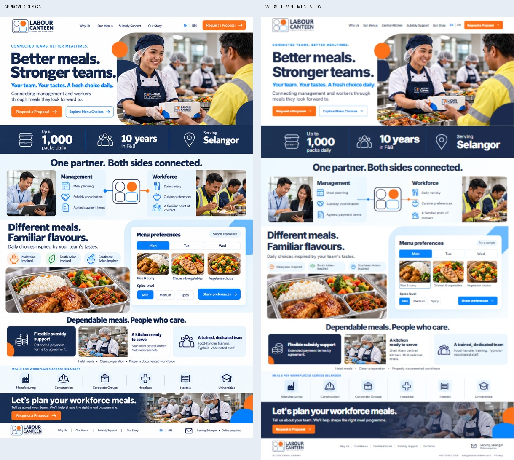
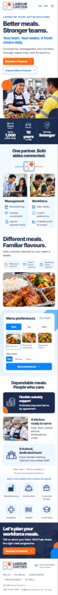
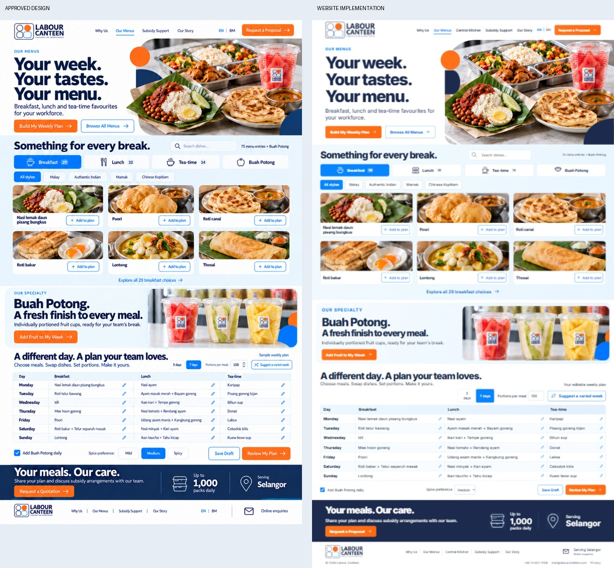
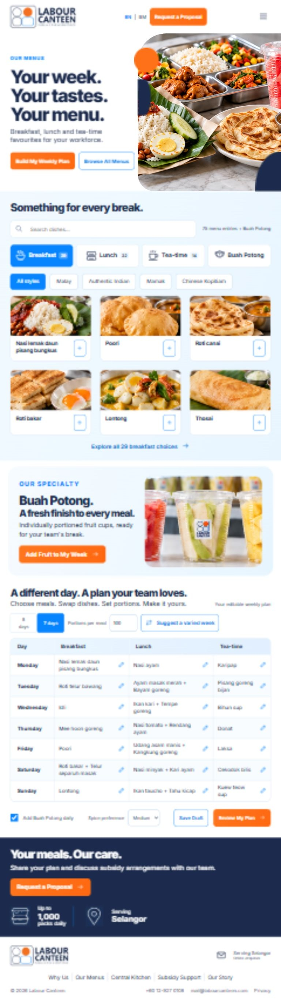
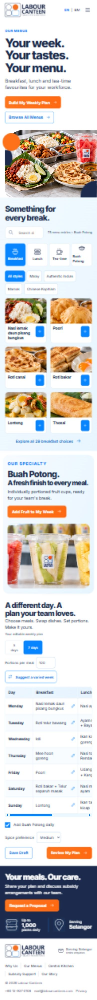
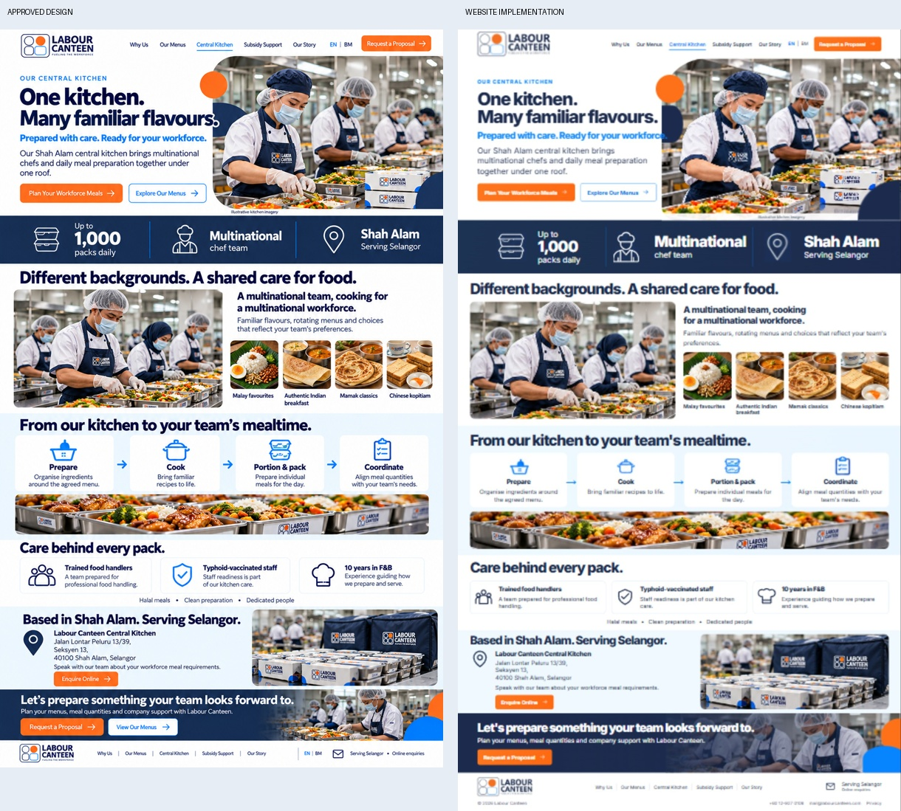
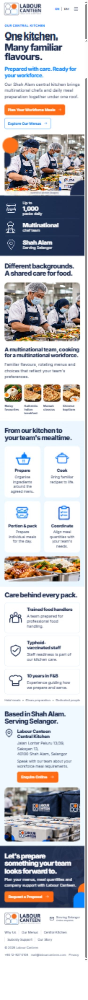
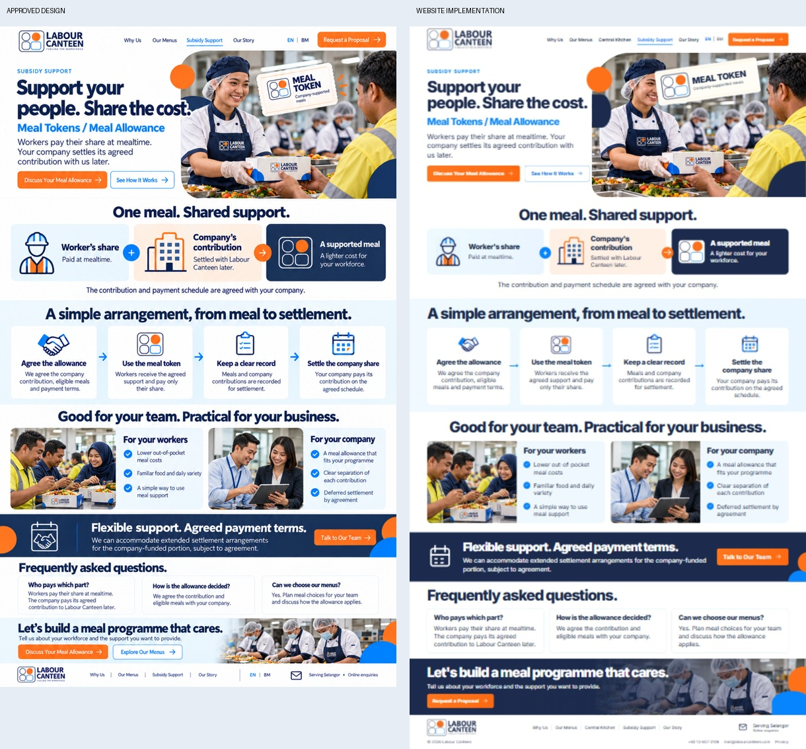
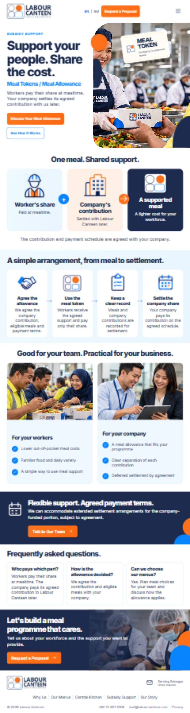
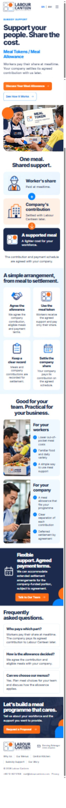
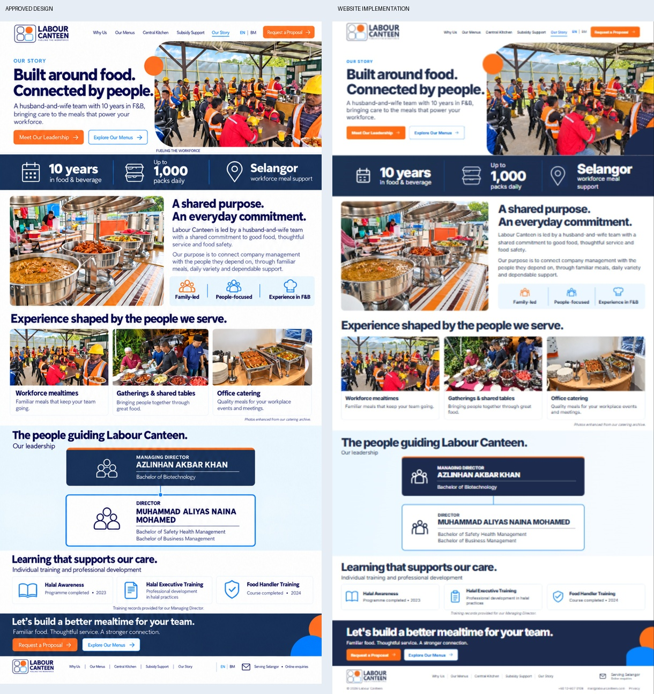
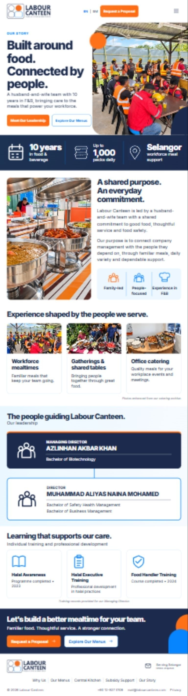
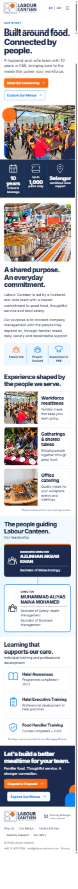
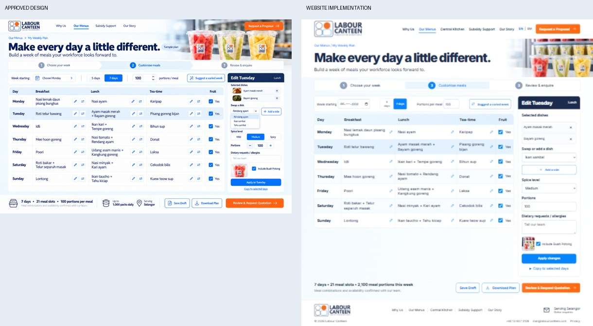
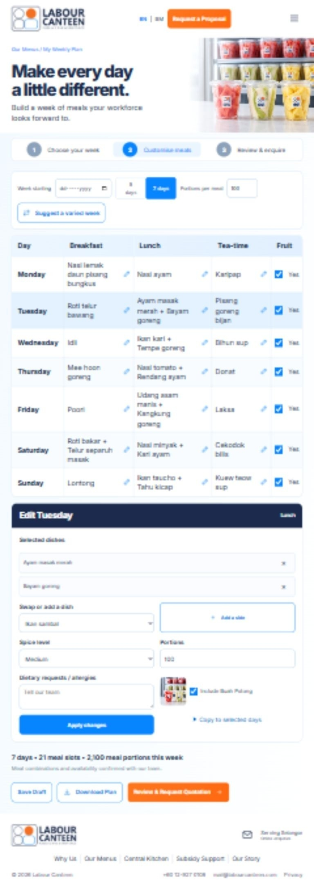
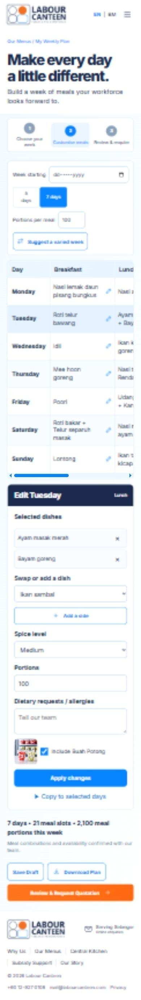
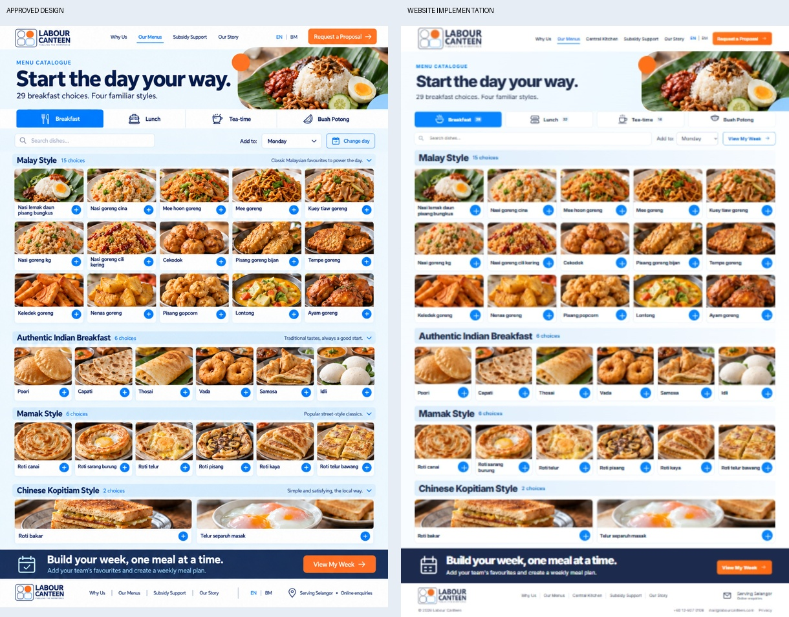
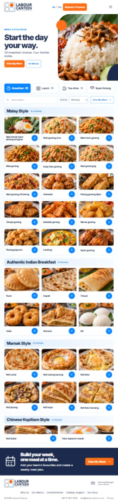
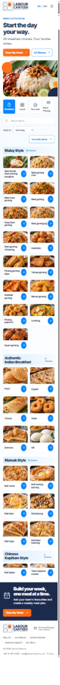
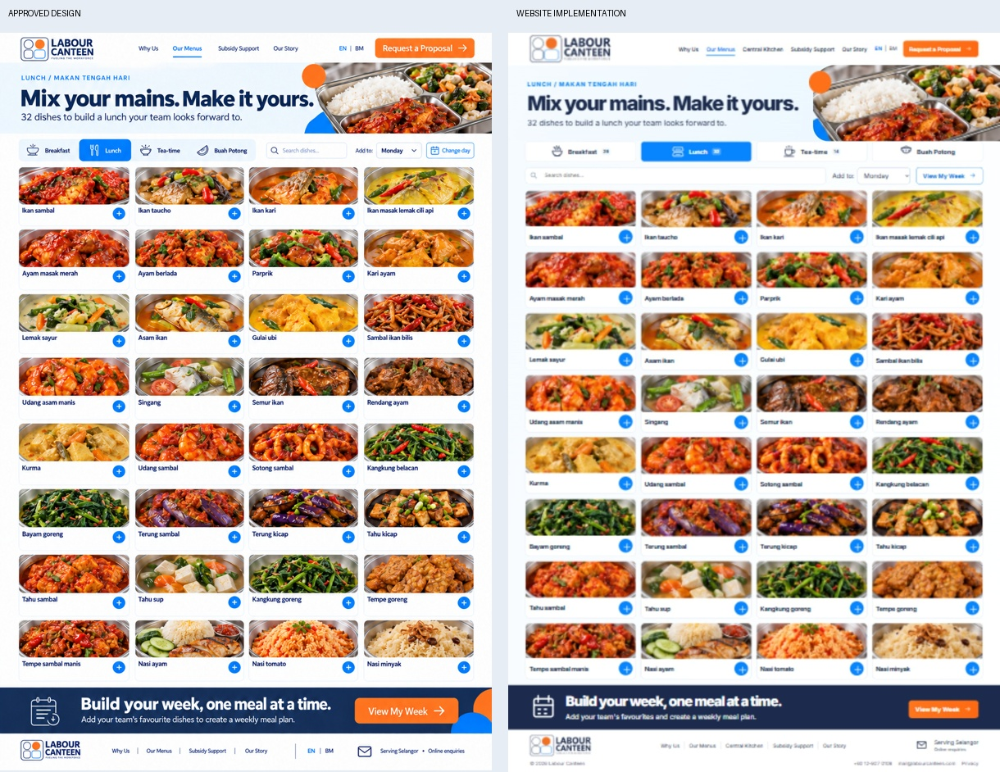
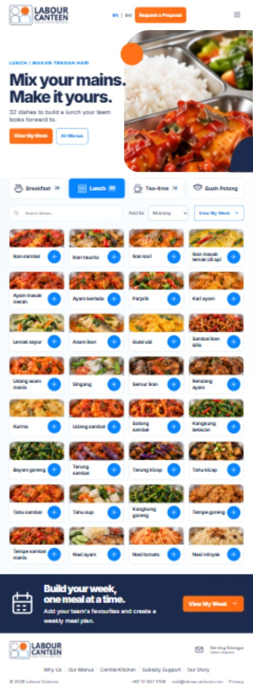
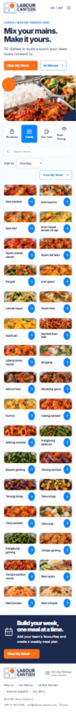
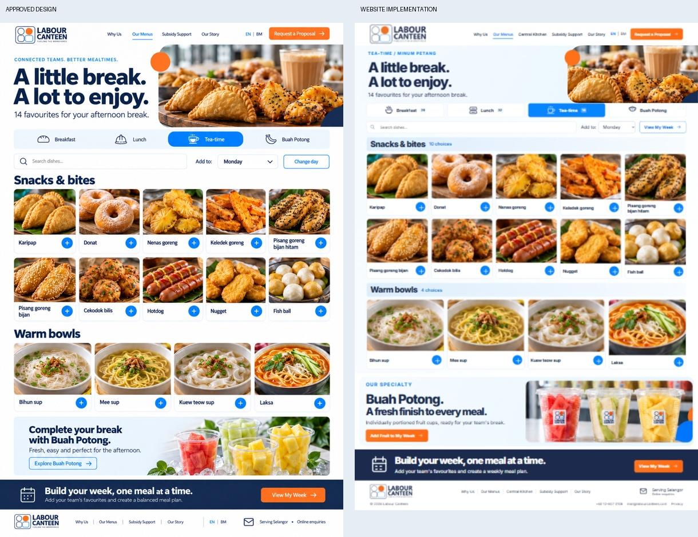
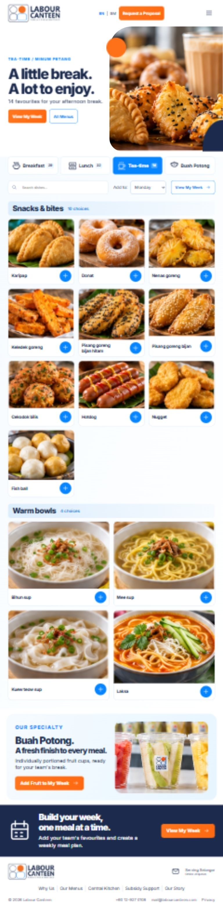
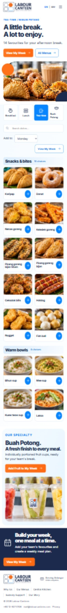